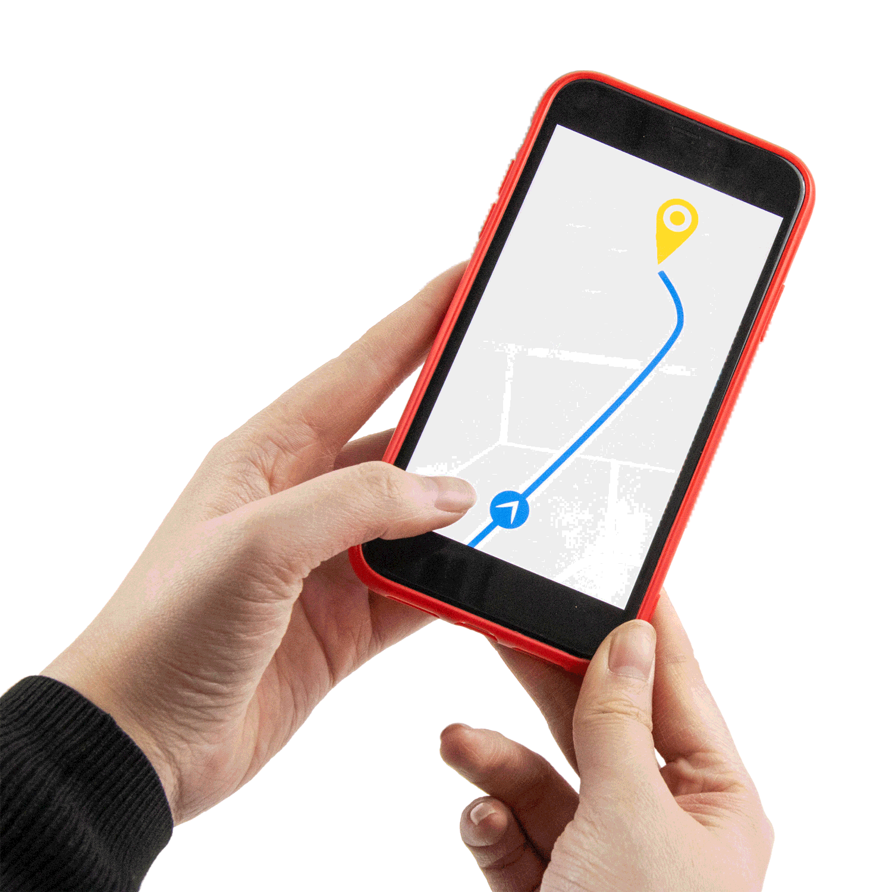

어서와요 : ) 소개페이지 맞아요.
The best teachers are.....The best teachers are.....The best teachers are.....The best teachers are.....The best teachers are.....The best teachers are.....The best teachers are.....The best teachers are.....The best teachers are.....
The best teachers are.....The best teachers are.....The best teachers are.....The best teachers are.....The best teachers are.....The best teachers are.....The best teachers are.....The best teachers are.....The best teachers are.....
The best teachers are.....The best teachers are.....The best teachers are.....The best teachers are.....The best teachers are.....The best teachers are.....The best teachers are.....The best teachers are.....The best teachers are.....
The best teachers are.....The best teachers are.....The best teachers are.....The best teachers are.....The best teachers are.....The best teachers are.....The best teachers are.....The best teachers are.....The best teachers are.....
The best teachers are.....
those who show you where to look,
but don't tell you what to see
최고의 선생님은 무엇을 봐야 할지 알려주지 않고
어디를 봐야 할지 알려주는 사람이다
한번(일번),
뻔(FUN)하다. 풀어나보자
도착지가 적힌 종이
내비게이션
아직도 많은 사람들이 자신의 상태를 스스로 파악하고, 스스로 개선하기 위해 노력합니다. 하지만 우리가 첫번째 질문을 통해 알 수있듯이 도착지를 안다고 해서 낯선 외국에서 할 수 있는것은 많지 않습니다. 따라서 우리는 내비게이션이 필요합니다. 방향을 알려주는 이가 필요한 이유입니다.
당신이 원하는 내비게이션에 마우스를 가져다 대보세요
다른 내비게이션을 쓰셔도 됩니다.
그러나
당신이 원하는 최종 목표를
직.접.경험해본 경력직은 트레이너 뿐 입니다.
그녀는
"엄마, 아빠, 딸 모두 예쁘고 친절하신 다희 팀장님께 트레이닝 받고 있습니다.
아빠는 허리 디스크로 시술을 두 번 받고도 만족스럽지 못한 몸 상태였는데 확실히 눈에 띄게 컨디션이 좋아졌습니다.
엄마는 이전에 다른 곳에서 PT를 쭉 받았었는데 다희 팀장님이 더 강하게 해주신다고 하네요. 덕분에 더욱 많이 건강해지고 있습니다.
딸은 아직 어려서(초6) 개인 PT까지 해야 하나 고민을 했었는데 지금은 만족하고 있습니다. 다희 팀장님의 친절한 매력에 빠져 요즘은 즐겁게 운동하고 있습니다. 체력, 자세교정에 큰 도움이 되고 있습니다.
재활을 중심으로 하신다고 하시지만, 운동량은 부족함 없이 채워주십니다.
예뻤다
지금은
오다희 팀장님께 20회 결제하고 종료되어 30회 추가 결제했습니다.
운동할 때, 운동효과를 최대로 줄 수 있도록 자세교정도 꼼꼼히 봐주시고, 다그치지 않고 그날 그날의 컨디션에 맞게 조절해주셔서 너무 좋습니다.
체계적인 운동과 올바른 자세교정을 원하시면 꼼꼼하게 봐주시는 오다희 팀장님 추천합니다!
멋쁘다